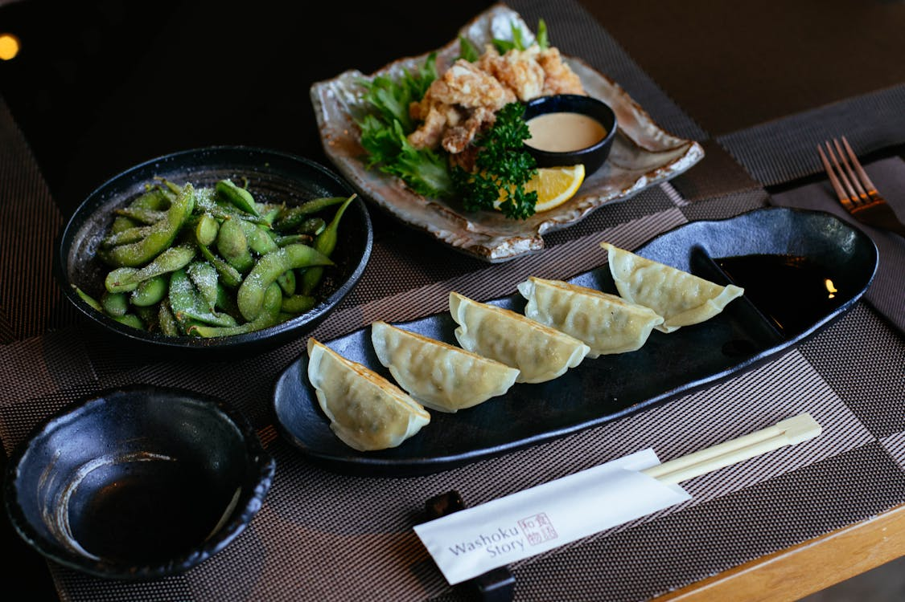

CHINESE CUISINE
Chinese cuisine comprises cuisines originating from China, as well as from Chinese people from other parts of the world. Because of the Chinese diaspora and historical power of the country, Chinese cuisine has profoundly influenced many other cuisines in Asia and beyond, with modifications made to cater to local palates. Chinese food staples such as rice, soy sauce, noodles, tea, chili oil, and tofu, and utensils such as chopsticks and the wok, can now be found worldwide.
Read More